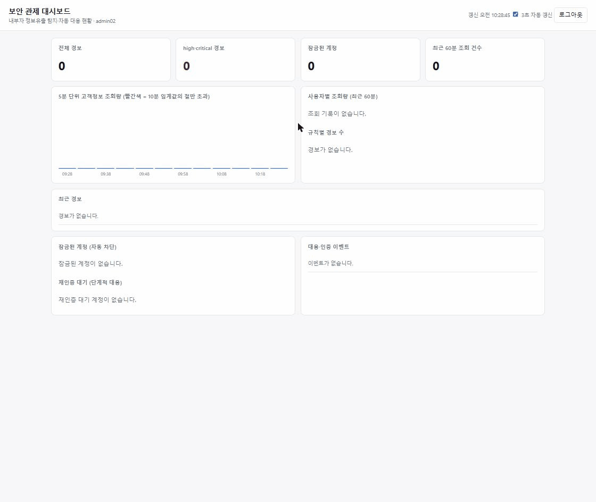

포트폴리오 프로젝트 · 보안 사고 모의 구현
쿠팡(접근통제 미흡) × 롯데카드(탐지 지연) 사고를 로컬에서 재현하고,
막는 과정과 한계를 수치로 측정했습니다
Python · FastAPI · 탐지 엔진 · ELK · Sigma · Docker | github.com/shk12170-dev/Defense-follow
정상 권한을 가진 내부자가 대량으로 정보를 가져갈 수 있었다는 점이 핵심입니다.
→ RBAC, 마스킹, 조회 상한, 감사 로그
이상 징후를 늦게 알아차린 탓에 피해가 커졌습니다.
→ 실시간 탐지, 자동 잠금, 반출 사전 차단
"정상 권한으로 천천히 빼가는 내부자를, 어디까지 막을 수 있는가?"
접근통제·마스킹은 "첫 번째 방어선", 탐지·대응은 "두 번째 방어선", 반출 사전 차단은 "피해 확정 전 마지막 문"입니다.
| ID | 규칙 | 기준 | 대응 |
|---|---|---|---|
| R1 | 대량 조회 | 10분 내 300건 이상 | 잠금 |
| R2 | 비정상 시간대 | 00~06시(KST) 접근 | 경고 |
| R3 | 휴면·퇴사 계정 접근 | 비활성 계정 시도 | 잠금 |
| R4 | 대량 조회 후 반출 | 30분 내 200건 후 내보내기 | 잠금 |
| R5 / R6 | 일일 누적 조회 | 24시간 1,200건 / 2,000건 | 경고 / 잠금 |
| R7 | 반출 사전 차단 | 직전 30분 200건 조회 후 내보내기 | 거부 |
| R8 | 개인 기준선 (UEBA) | 본인 평균의 4배 이상, 500건 이상 | 경고 |
R5~R8은 1차 측정에서 드러난 한계를 보완하기 위해 추가한 2차 규칙입니다.
| 시나리오 | 방어 OFF / 1차 | 2차 보완 후 |
|---|---|---|
| 상담원 대량 조회 (쿠팡형) | 805건 확보 | 300건에서 차단 |
| 조회 후 외부 반출 (롯데카드형) | 5,250건 (1차 ON: 1,250건) | 250건, 내보내기 0회 성공 |
| 분당 10건 저속 공격 (8시간) | 4,800건, 탐지 못함 | 2,000건에서 차단 |
| 첫 경보까지 | 경고 없음 | 약 80~110ms |
| 정상 요청 평균 응답 | 13.62ms | 13.86ms (+2%) |
정상 업무 합성 30일(상담원 150명·일): 잠금 오탐 1건(0.67%), 경고 7건 — 불리한 수치도 그대로 공개합니다.

1상담원 대량 조회 → R1 경보, 재인증 요구(428)
2조회 후 반출 시도 → R7 사전 차단
3대시보드에 재인증 대기·대응 이벤트 표시
4상담원이 인증 코드+사유로 재인증 → 업무 재개
첫 내보내기 1,000건이 유출된 뒤에야 잠금. 분당 30건 미만 저속 공격은 미탐.
누적 조회 2단계 대응, 반출 사전 차단, 개인 기준선.
반출 1,250 → 250건, 저속 공격 미탐 → 2,000건에서 차단.
R5 경고 1,000건은 정상 업무 경고가 상담원·일의 21%로 너무 잦아 1,200건(7건)으로 조정, 유출 규모는 동일.
검색어 %%가 와일드카드 제거 후 빈 검색어가 되어 전체 고객이 조회됨 → 2글자 이상 요구 + 회귀 테스트.
하루 1,200건 미만은 고정 규칙으로 못 잡음. R8은 평소 조회량이 적은 사용자에게만 효과가 있고, 하루 800건 넘게 보는 상담원에는 효과 없음.
R1 기준 최대 약 300건은 확보 가능. 반출(내보내기)만 사전 차단.
합성 로그 기준 잠금 오탐 0.67%. 실제 업무 로그로 임계값 튜닝 필요, 잠금 전 확인 단계 검토.
Sigma는 pySigma 변환까지만 확인(SIEM 실행 미검증). 측정은 합성 로그·단일 PC 기준.
접근통제·마스킹만으로는 정상 권한의 내부자를 막지 못하고,
사후 탐지만으로는 첫 피해를 막지 못합니다.
두 계층과 사전 차단을 함께 두고, 측정으로 규칙을 고치는 순환이 핵심입니다.
다음 단계: 실제 로그 기반 임계값 튜닝 · 역할별 기준선 · 잠금 전 관리자 확인 · SIEM 실행 검증